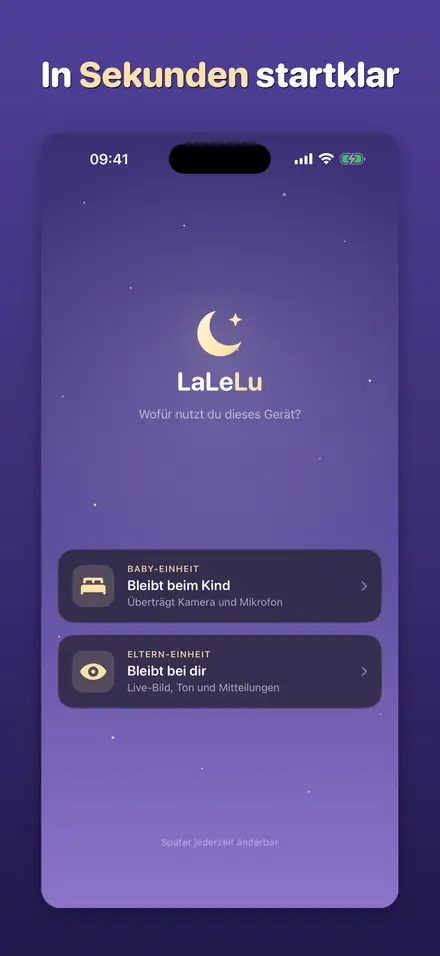

Canlı görüntü ve ses
Bebeğinizi ebeveyn ünitesinde anlık olarak görün ve dinleyin; evde Wi-Fi ile, dışarıda mobil veriyle.
LaLeLu, iPhone, iPad ve Mac'inizi kameralı özel bir bebek telsizine çevirir: canlı görüntü ve ses, ağlama uyarısı ve bebekle konuşma. Uçtan uca şifreli, asla kaydedilmez.
iPhone, iPad ve Mac için. İki Apple cihazı gerekir.

Bir cihaz bebek odasında bebek ünitesi olarak kalır, diğeri ebeveyn ünitesi olur. iPhone, iPad ve Mac'i istediğiniz gibi eşleştirin.
Bebeğinizi ebeveyn ünitesinde anlık olarak görün ve dinleyin; evde Wi-Fi ile, dışarıda mobil veriyle.
Ses algılama tamamen bebek ünitesinde çalışır. Uygulama ağlama veya öksürük duyunca, ekran kilitliyken bile bildirim alırsınız.
Yerinizden kalkmadan, bir tuşa basarak bebeğinizle konuşun.
Beyaz, pembe ve kahverengi gürültü. Zamanlayıcı, bebeğiniz uyuyunca sesleri kapatır.
Koyu gece modu gözleri yormaz, yumuşak bir ışık karanlıkta yardımcı olur.
Bebek odasında ne zaman ses olduğunu görün. Geçmiş yalnızca cihazınızda kalır.



Birçok bebek kamerası uygulaması abonelik, cihaz başına satın alma veya kendi hesabını ister. LaLeLu istemez.
| Ölçüt | LaLeLu | Tipik bebek kamerası uygulamaları |
|---|---|---|
| Fiyat | Ücretsiz, tüm cihazlarda | çoğunlukla abonelik veya platform başına satın alma |
| Hesap / kayıt | Yok, eşleştirme için yalnızca mevcut iCloud erişiminiz | çoğunlukla kendi hesabı gerekir |
| Reklam ve izleme | Reklam yok, izleme SDK'sı yok | bazen reklam veya analiz |
| Görüntü ve ses | Uçtan uca şifreli, asla kaydedilmez | bazen bulut sunucularında saklanır veya işlenir |
| Ağlama algılama | Cihazda, buluta ses gönderilmez | bazen yalnızca ses eşiği veya bulut analizi |
| Cihazlar | iPhone, iPad ve Mac, istediğiniz gibi birleştirin | çoğunlukla tek platform |
Karşılaştırma, belirli bir uygulamayı değil, pazardaki genel farkları anlatır.
Görüntü ve ses doğrudan cihazlarınız arasında akar (WebRTC, DTLS-SRTP). Görüntüyü yalnızca kendi eşleştirdiğiniz cihazlar görür.
Görüntü ve ses hiçbir sunucuda veya uygulamada kalıcı olarak saklanmaz.
Ses analizi Apple SoundAnalysis ile yerel olarak yapılır. Bize hiçbir ses gönderilmez.
Dürüst olalım: LaLeLu bağlantıyı ve uyarıyı aktarmak için Apple (iCloud, push) ve Cloudflare'i kullanır. Nelerin ne kadar süre saklandığı gizlilik bildiriminde (İngilizce) ayrıntılı olarak açıklanır.
Evet. LaLeLu; abonelik, reklam ve ücretli kilitli özellik içermeyen ücretsiz bir bebek kamerası uygulamasıdır. Süresi dolan bir deneme yoktur.
Hayır. LaLeLu'nun kendi hesabı ve kayıt adımı yoktur. İki cihazı bir kez eşleştirmek için uygulama, iPhone, iPad veya Mac'inizde zaten bulunan iCloud erişimini kullanır.
Hayır. Görüntü ve ses canlı olarak, uçtan uca şifreli (WebRTC, DTLS-SRTP) biçimde doğrudan cihazlarınız arasında gönderilir; hiçbir sunucuda veya uygulamada kaydedilmez. Doğrudan bağlantı kurulamazsa, yine şifreli olan akış, şifresini çözemeyen bir Cloudflare aktarıcısı üzerinden geçer.
İki Apple cihazı: biri bebek ünitesi olarak odada kalır (kamera ve mikrofonlu iPhone, iPad veya Mac), diğeri ebeveyn ünitesidir (iPhone veya iPad). Bebek ünitesi olarak eski bir iPhone yeterlidir. Android desteklenmez.
Evet. Mac uygulaması, yerleşik veya bağlı bir kamera ve mikrofonla bebek ünitesi olarak çalışır. Mac bebek odasında kalırken iPhone'unuz ebeveyn ünitesi olur.
Evet. Aynı Wi-Fi üzerinden ve ayrıca mobil veri veya diğer ağlar üzerinden bağlanır. İki cihazın da internete ihtiyacı vardır. Evde bağlantı genellikle bir ila iki saniye, dışarıda çoğu zaman birkaç saniye sürer.
Ses algılama, Apple SoundAnalysis ile tamamen bebek ünitesinde çalışır. Analiz için buluta ses gönderilmez ve eğitim için hiçbir şey toplanmaz. Uygulama ağlama veya öksürük duyunca bildirim alırsınız.
Evet. Uyarı, ekran kilitliyken bile anlık bildirim olarak gelir. iPhone ayarlarından LaLeLu için bildirimlere izin verin.
Bebek cihazında bir eşleştirme bağlantısı veya QR kod oluşturur, ebeveyn cihazında açar ya da taratırsınız. Birkaç dakika sürer. Bağlantı eşleştirmenin anahtarıdır; yalnızca güvendiğiniz kişilerle paylaşın.
Evet. Birden fazla ebeveyn ünitesi aynı anda bağlanabilir; böylece iki ebeveyn de, farklı Apple Kimlikleriyle bile, haberdar olur.
LaLeLu'yu ücretsiz indirin, birkaç dakikada özel bebek kameranızı kurun.
App Store'dan ücretsiz indir